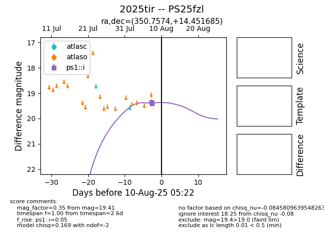

Target 2025tir at 2025-08-10 05:22, see:
TNS: wis-tns.org/object/2025tir
YSE: ziggy.ucolick.org/yse/transient_detail/2025tir
alt names
2025tir (yse,tns)
PS25fzl (panstarrs)
coordinates:
equatorial (ra, dec) = (350.7574,+14.45168)
galactic (l, b) = (92.9374,-43.21196)
photometry
last ps1::i=19.41
3 ps1::i detections
